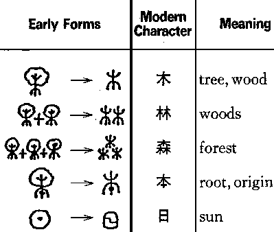
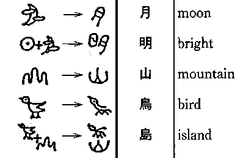
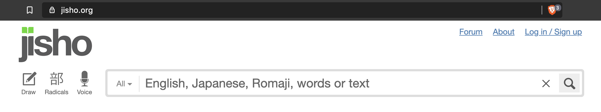

An introduction to the Japanese language
Leanne Guy
Tuesday 5 May 2020
Origins of Japanese
- No conclusive evidence relating Japanese to any other language family.
- The spoken and written languages have unrelated histories.
- The writing clearly comes from Chinese characters.
- But Japanese has no genetic relationship to Chinese
- The origins of the spoken language are obscure — it's genetic affiliation is unknown.
Characteristics of Japanese
- Subject-Object-Verb (SOV) language.
- Mora timed language — all syllables stressed equally.
- Phonetic, no compound or blended sounds
- Unlike most Asian languages, it is not a tonal language
Japanese is a language that both fascinates and intimidates people.
What makes Japanese hard?
- Most complicated system of writing of any language in the world
- Grammatical structure is very different to that of most other languages.
- Your audience changes how you speak; 敬語 (keigo)
- The subject is frequently omitted from the sentence; context is key
- There are a lot of ways to count — counter words
.. and what makes it easy ?
- No sound that cannot be pronounced by speakers of European languages. ('R' is a little different though).
- No gender, no articles, no plurals.
- No verb conjugations.
- No future tense.
- The grammar, though very different, is very regular (and IMHO very logical)
— there are very few exceptions to the rule.
Sentence Structure
Most people find Japanese sentence structure to be confusing.
I find it to be very logical. You need to change how you think.
Particles — 助詞 — joshi
Japanese sentences are structured around 'particles'.
Particles are 'psuedo-words' that attach to the
end of a content word to define its grammatical function
in the sentence.
It is 'particles' not word order that tell us what happens.
Particles at the end of a sentence
- ka —か : Makes a sentence a question
- yo —よ : Exclamation mark - except you say it
- ne —ね : Asks for the listener's confirmation — Isn't it / Aren't they, etc
Let's eat sushi — 寿司
Vocab: Watashi, "I"; tabemasu "to eat"; yoru "night".
- watashi wa sushi o tabemasu.
- sushi o watashi wa tabemasu.
- watashi wa sushi o Princeton de tabemasu.
- Robert-san wa yoru ni Princeton de sushi o tabemasu.
- yoru ni Robert-san to Jim-kun wa Princeton de sushi o tabemasu.
- Robert-san to Jim-kun wa Princeton de yoru ni sushi o tabemasu ka.
The (very complicated) Japanese Writing System
Writing was introduced from China about 1500 years ago, before that there was no written language
Given the very different structure of the language, Chinese characters (kanji) were not a good fit for Japanese,
and so the Japanese writing system evolved into the complicated system that exists today
Syllabic 'kana' scripts were later derived from kanji
The Four writing scripts
Kanji - Pictographs, Ideographs that convey meaning.
Hiragana - a syllabic script for writing native Japanese words and grammatical elements.
Katakana - a syllabic script for writing words of foreign origin, onomatopoeic words and to add stress to words.
Romaji - Roman letters with Japanese words
Kanji — 漢字
Chinese characters derived from pictures of things they represented — pictographs and ideographs


Kanji are used to write most content words of native Japanese or historically Chinese origin
-->
Kanji — 漢字
Kanji are used to write most content words of native Japanese or historically Chinese origin
- most nouns, such as 川 (kawa, "river")
- stems of: verbs, 食べます (tabemasu, "to eat")
adjectives, 速い (haya-i, "fast") , and
adverbs 速く (haya-ku, "quickly")
- most Japanese personal names and place names, such as 田中 (Tanaka) and 東京 (Tōkyō).
Honorific Speech —
敬語(keigo)
Literally "respectful language"
Japanese has an extensive grammatical system to express politeness and formality
How to use a Japanese dictionary
辞書 — Jisho (.org)

- Plain form (kudaketa)
- Simple polite (teineigo)
- Advanced polite (keigo) - some text or other
Apologizing
Japanese has many ways of apologizing, which you use depends on both what you are apologizing for
and to whom
sumimasen — すみません
The most common way to say sorry in daily life.
- Sorry — "I cannot fully express my remorse for what has happened and I apologize"
- Thank you — "I cannot thank you enough for going out of your way for me" or
"I’m sorry to have troubled you, but thank you"
sumimasen deshita: Past tense, "I'm sorry for what I did" —
a little more polite/formal, can be used with a superior
Gomen — 御免
Gomen means "to forgive" - carries a sense of admission of wrongdoing by asking for forgiveness.
- gomen — I'm sorry (informal)
- gomen ne — I'm sorry, OK. (very informal)
- gomen nasai — Please forgive me (more polite)
- gomen kudasi — ... even more polite. Also means "may I come in?"
Use the first 2 only with close friends and family, never with a superior
Shitsurei — 失礼
Shitsurei means "discourtesy, impoliteness", Shimasu means "to do" so literally " to do something impolite".
Used when excusing rude behaviour or insults.
- shitsurei shimasu: I am about to do something rude, please excuse me
- shitsurei shimashita: I was rude, I'm sorry (past tense)
- shitsurei itashimashita: more polite (keigo) of above
Commonly used in the workplace,
e.g you forget to inform a colleague that a meeting time has changed
Moushiwake-nai — 申し訳ない
Moushiwake means "excuse", nai means "there is not" so literally "there is no excuse"
- Moushiwake-nai: No excuse can justify my actions and I apologize"
- Moushiwake-arimasen:More polite
- Moushiwake-gozaimasen: Most polite (keigo)
Very formal expression - should be used with superiors
E.g if your actions cost your company a client
Useful expressions
- Hajimemashite — 初めまして literally "for the first time".
Said when meeting someone for the first (and only first) time. Accompanied by a bow
- Kekko desu — No thanks (literally "I'm fine")- polite way to unambiguously
refuse something
- Itadakimasu — Always say before a meal
- Gochisousama deshita — Always say after a meal
Useful expressions
- otsukaresama deshita — Good job, thank you for your work / efforts.
Literally "Honorable one who has become tired".
- otsukaresama desu Present tense, as above but used if the work is still in progress.
- gokurousama deshita — Same meaning as above but used by a superior to an subordinate at work.
E.g : A friend finishes a workout, a colleague finishes a piece of work. Also said by everyone at the end of a meeting
Useful expressions
- o-makase — Lets someone know that you will follow their recommendation . Especially used in restaurants
- Irashai/mase — Honorific expression welcoming someone
- yoroshiku o-negai shimasu —
- Onegai shimasu — Used when making a request for something or asking a favour
- o sewa ni narimashita —
- Osaki ni shitsurei shimasu!